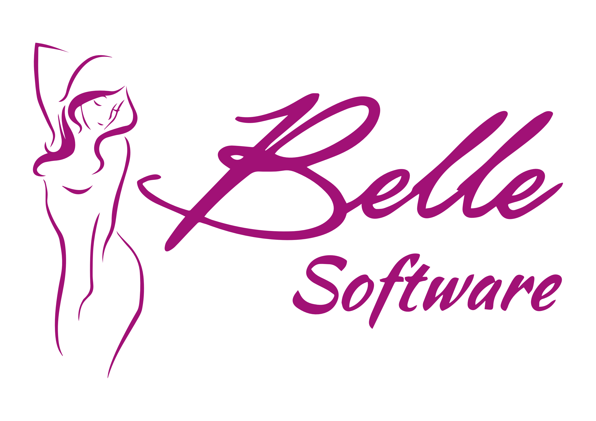

Tecnologia da informação com identidade própria
Tecnologia que impulsiona clínicas de estética a crescer com gestão, inteligência e escala.
A Geinfo desenvolve soluções em tecnologia da informação para operações que precisam de sistemas sob medida, suporte especializado e estrutura confiável para crescer com mais controle.
Posicionamento institucional
Uma comunicação visual alinhada à marca, ao negócio e à confiança que a empresa precisa transmitir.

Desenvolvimento do Belle Software
Uma plataforma criada para transformar a gestão de clínicas e franquias de estética.
O Belle Software nasceu da especialização da Geinfo no setor de estética, combinando desenvolvimento próprio, visão estratégica de negócio e evolução contínua para atender operações em escala nacional.
A solução reúne gestão, relacionamento, performance e automação em uma estrutura desenhada para sustentar crescimento real, com tecnologia desenvolvida pela própria Geinfo.
Desenvolvimento customizável
Suporte técnico especializado
Estrutura empresarial ativa
Presença institucional confiável
Serviços
O que a Geinfo pode entregar
A oferta foi reorganizada em blocos mais institucionais, com foco no que precisa ficar claro para clientes, parceiros e oportunidades comerciais.
Sistemas personalizados
Desenvolvimento e licenciamento de programas de computador adaptados ao fluxo real da empresa.
Licenciamento de software
Estrutura para produtos customizáveis e não customizáveis, conforme a demanda do cliente.
Suporte e manutenção
Atendimento técnico, sustentação de ambientes e evolução contínua das soluções implantadas.
Apoio operacional
Serviços complementares para organização, apoio administrativo e atendimento a operações específicas.
Sobre a empresa
Uma empresa catarinense que transformou tecnologia em referência nacional para o mercado de estética.
A trajetória da Geinfo começa em 2008, quando Rafael Francisco Thibes, recém-formado no MBA em Gestão de Negócios pela FGV, decidiu transformar sua vocação empreendedora em uma empresa de tecnologia com propósito claro.
Hoje, a empresa atua em todo o Brasil, atende mais de 2.700 clínicas e se posiciona como parceira estratégica de clínicas, redes e franquias de estética que buscam crescimento, automação e performance real.
Histórico
Marcos que constroem a evolução da Geinfo.
A história da empresa combina visão empreendedora, especialização setorial e uma sequência consistente de inovações em software, educação, comunicação e inteligência aplicada ao mercado de estética.
O primeiro passo
Rafael Francisco Thibes inicia a jornada empreendedora e cria o Aquila Help Desk, a primeira base tecnológica da empresa.
Fundação oficial
Em 15 de abril de 2009, com apoio do PRIME, a Geinfo é fundada em Caçador/SC, ao lado de Paulo Roberto Córdova, e lança o Dr. Análise.
Virada estratégica
A empresa direciona seu foco ao segmento de estética e lança o Belle Software, iniciando uma nova fase de expansão nacional.
Consolidação societária
Rafael assume o controle integral da Geinfo, com Paulo Roberto Thibes como sócio investidor, enquanto o Belle acelera sua expansão pelo país.
Educação e comunidade
Nasce o Gestão de Estética Conference Online, evento que já ultrapassou 25 mil inscritos e ampliou a influência da Geinfo no setor.
Expansão em meio aos desafios
Mesmo durante a pandemia, a Geinfo cresce, adquire a marca Gestão Spa e inaugura sua nova sede própria.
Nova frente de resultado
O serviço +RESULTADOS amplia a proposta da empresa com ações estratégicas de marketing, vendas e gestão para os clientes.
Ecossistema em expansão
BelleChat, BelleMessage e a aquisição da carteira de estética da Bten fortalecem o ecossistema e ampliam a base de clientes.
Inteligência artificial aplicada
O lançamento do BelleChat com IA e do Gestor IA leva a empresa a um novo patamar de automação, análise e apoio à decisão.
Essência da marca
Missão, visão e valores que guiam
cada etapa da Geinfo.
Missão
Democratizar o acesso à tecnologia de ponta e ao conhecimento de excelência para aumentar a competitividade dos clientes por meio da gestão automatizada.
Visão
Ser o maior e melhor software de gestão de clínicas e franquias de estética do país.
Valores
Respeito, Excelência, Empoderamento e Inovação formam o REEI, conjunto de princípios que sustenta cada projeto, cada entrega e cada relação construída com o mercado.
Resultados
Uma empresa que cresce junto com os clientes.
Atendidas em todo o território nacional, com foco em gestão e crescimento no setor de estética.
No Gestão de Estética Conference Online, desde a primeira edição do evento.
Software, educação, comunicação e inteligência aplicados em um ecossistema integrado de soluções.
Contato